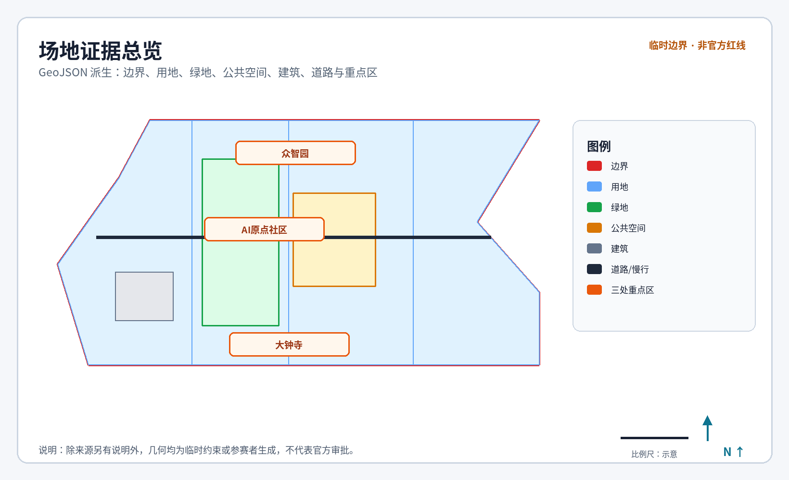
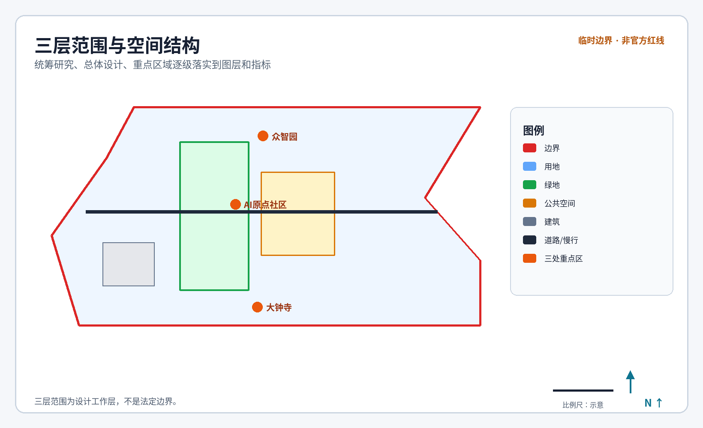
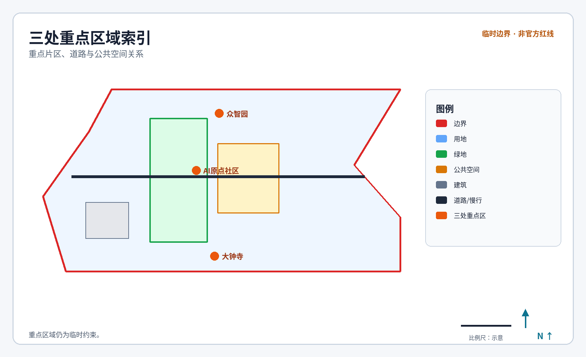
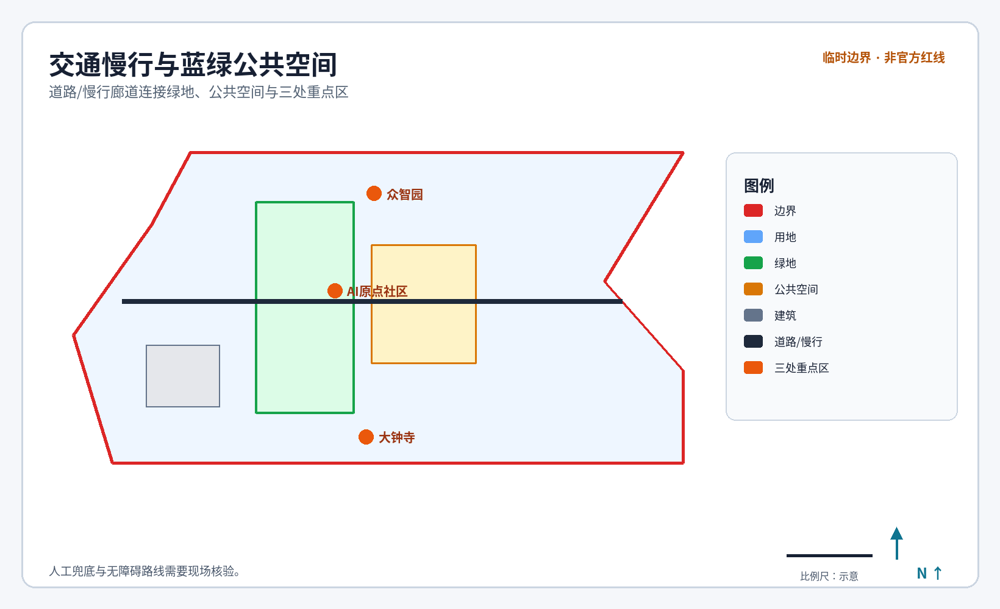
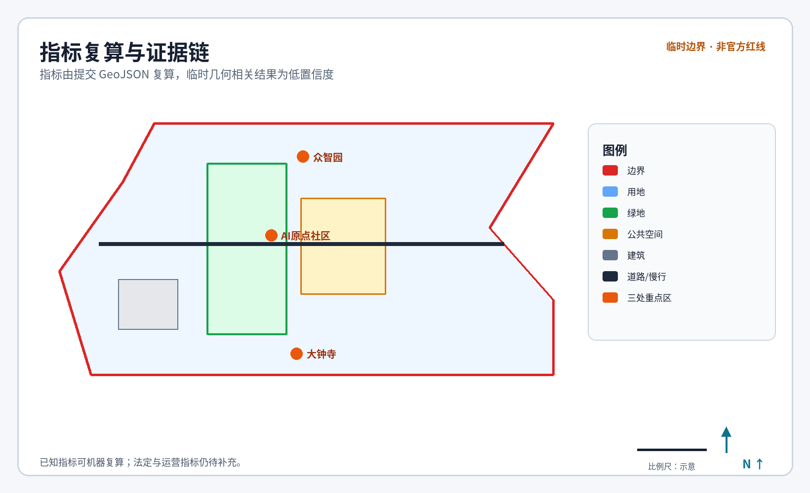

核心指标
11.4 平方公里 · 12.34% · 7.33%
任务覆盖与自检状态见 manifest.json / self_check.json；所有假设见 assumptions.json。
AI 场景证据卡
开源发布厅｜位置:众智园｜数据:发布议程/评测结果｜复核:人工确认｜KPI:活动数/参与度
安全治理沙盒｜位置:众智园｜数据:授权测试数据｜复核:安全专家｜KPI:问题闭环率
端侧算力驿站｜位置:AI原点社区｜数据:能耗/设备状态｜复核:运维人员｜KPI:可用率
AI慢行导航｜位置:京张慢行廊道｜数据:公开道路/人工巡查｜复核:现场核验｜KPI:无障碍断点减少
大钟寺国际路演客厅｜位置:大钟寺｜数据:活动预约｜复核:运营方｜KPI:转化线索
清河低碳创新廊｜位置:绿地/公共空间｜数据:环境与客流聚合｜复核:社区代表｜KPI:满意度
近校成果转化街｜位置:AI原点社区｜数据:校企需求｜复核:高校/企业｜KPI:项目对接数
数据要素会客厅｜位置:大钟寺｜数据:授权数据目录｜复核:数据治理岗｜KPI:合规数据集
AI生活服务样板街｜位置:社区配套区｜数据:服务请求聚合｜复核:人工窗口｜KPI:人工兜底响应
全球AI活动周路线｜位置:三核串联｜数据:活动许可/安全预案｜复核:活动负责人｜KPI:安全事件为零
来源与边界
全球案例仅作比较参考。本页不加载 CDN、地图瓦片、远程脚本、外部字体、API、表单或 iframe。